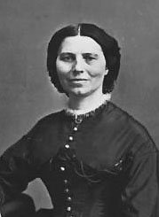

|

|

|
|
|
Civil War nurse Clara Barton was the founder of the American
Association of the Red Cross and served as its president for
twenty-three years. She was born on Christmas Day in 1821
and spent her youth in North Oxford, Massachusetts. A shy
but determined child, she was educated informally at home by
her older sisters and brothers and attended local schools.
In turn, she taught in neighboring schools when she was
eighteen. After a year of advanced study at the Liberal
Institute of Clinton, New York, Barton returned to teaching.
She successfully founded the first public school in
Bordentown, New Jersey in 1852. Moving to Washington D.C.
she was appointed a clerk in the United States Patent Office
by a Republican Senator. When the administration changed
hands in 1857 with a Democratic victory she lost her post
and returned to her hometown.
The needs of soldiers during the Civil War engaged
Barton, launching a new direction in her life's work. Her
outstanding contribution to the war effort was to gather
supplies and provisions for the soldiers who were in short
supply of bandages, medicine and food. Witnessing the
absence of any medical facilities at the Battle of Bull Run
she took it upon herself to advertise for supplies in a
Massachusetts newspaper and gather the provisions. In 1862
she and a few friends began to distribute the supplies to
military hospitals and to the men at the battlefront.
Traveling by mule team they traversed Virginia and Maryland,
heading to the battlefields. Barton was amazingly
resourceful at giving aid during and immediately after a
battle. She provided candles for a doctor treating wounded
soldiers at night, for example, and prepared soup and coffee
for thousands of men in the midst of the fighting. Barton
became less active at the battlefront as the war progressed
and the Union established commissions to provide for and
nurse the sick.
After the war Barton undertook the daunting task of
tracing the identity of the war dead. With President
Lincoln's approval she established an office where she and a
few assistants published the names of the missing in
newspapers soliciting information from returned soldiers and
ex-prisoners of war. She organized the information she
received and wrote to the soldiers' families. In addition,
with the help of an ex-prisoner, she identified those who
died in the infamous Andersonville prison in Georgia and
marked their graves. Between identifying the missing and
lecturing around the country about her war experiences, she
suffered a nervous collapse and retreated to Europe in 1869.
It was in Switzerland that Barton found a new way to
broaden her mission of providing for people in need. At the
Geneva Convention, organized to bring humane assistance to
war zones throughout the world, the International Committee
of the Red Cross was established as a neutral body offering
aid to wounded soldiers and medical personnel. Belligerent
countries were to yield to the emblem of a red cross on a
white background. Barton worked for the International Red
Cross during the Franco-Prussian War of 1870-71.
Back in the United States, after convalescing from
another breakdown, Barton campaigned tirelessly for the
United States to ratify the Geneva Treaty. Finally, in 1882,
Barton's campaign succeeded. President Arthur signed the
Geneva Treaty. Two weeks later the Senate ratified it.
At the same time, Barton had launched a crusade for the
establishment of an American Red Cross. She educated the
public about the Red Cross through lectures and a pamphlet
she wrote. Barton's conception of an American Red Cross
included offering relief in times of natural disasters such
as floods, railway accidents and droughts as well as in
battle. In 1881 Barton and prominent associates organized
the American Association of the Red Cross. Barton was
chosen president, a post she held with just one short
interruption until 1904. During her tenure the organization
provided relief in twenty-one disasters such as a heavy
flood in Johnstown, Pennsylvania, the Russian famine of
1892, and a yellow fever epidemic in Florida.
Barton had specific ideas about the way the American Red
Cross should be run. She opposed government subsidies,
preferring to appeal to the public in time of crisis.
Keeping a tight rein on the organization, she alone judged
when the need for relief was genuine. She managed all the
finances and went into the field to do the work of relief
herself. At the age of seventy-seven she traveled by mule
cart in Cuba to provide aid during the Spanish-American War.
Barton also broadened the focus of relief to encompass
rehabilitation. Assistance included material for building
houses and agricultural tools where needed. In the Galveston
hurricane disaster, for example, the Red Cross provided
strawberry plants to enable farmers to resume agriculture.
Barton's rigid control of the management of the Red Cross
provoked some criticism. One problem was that the
relationship between the national Red Cross and local
auxiliaries was undefined. Critics felt that Barton should
be in the national office administering the organization,
not in the field. Further, Barton could not delegate
authority. She took offense at anyone questioning her
handling of finances. Although Barton had provided an
unswerving commitment to the Red Cross her management was
becoming outmoded in the new era at the turn of the century.
In 1900 Congress provided a federal charter to bring about
reorganization. Under pressure, in 1904 Barton reluctantly
resigned.
In her final years she pursued various interests and
supported the Women's Rights Movement. She died at 91 in her
home near Washington, D.C. on April 12, 1912.
Source: Joan Waugh, ed., Facts on File Encyclopedia of American
History: Civil War and Reconstruction, 1856 to 1869 (New York: Facts on
File, 2003), 24-26.
|